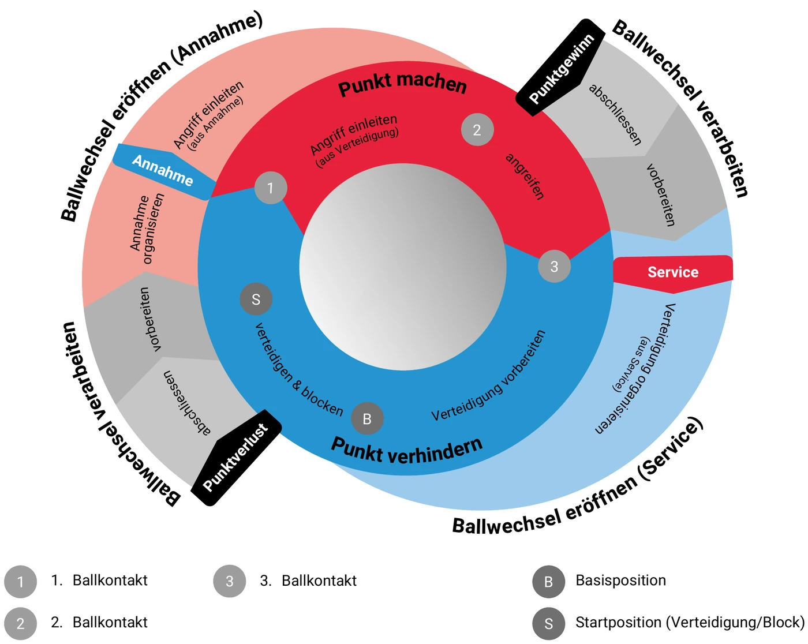
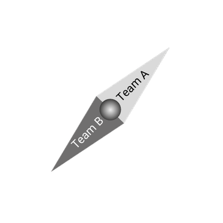

Lernzone
VC Smash Winterthur · Grundposition, Basisposition & Annahme verstehen und üben
Spielphasen-Kompass
Wo befinden wir uns im Ballwechsel — und was kommt als Nächstes? Klicke auf einen Bereich, ziehe die Nadel (Team A / Team B) oder gehe mit den Pfeilen Schritt für Schritt durch den Ballwechsel.


Grafik: Swiss Volley – Manual Volleyball (J+S), Abbildung 7 „Das Spielphasenmodell“, 1:1 übernommen mit freundlicher Genehmigung von Swiss Volley (die Nadel ist die Original-Nadel, nur drehbar gemacht). Bausteine: Volleyball.SwissMade – Titel & ID als Verweis, die Inhalte findest du nach dem Login mit deinem VolleyManager-Konto über die Suche nach dem Titel. Stufe richtet sich nach dem oben gewählten System.
Begriffe
Grundposition vs. Basisposition
Grundposition
Basisposition
Alle Rotationen im Überblick
Rotation wählen, dann Karte umdrehen — Grundposition, Basisposition und Annahme im Vergleich.
Annahme-Positionen üben
Rotation wählen, Spielerinnen möglichst nah an die Vorlage ziehen, dann prüfen. Bei "richtig" geht's automatisch zur nächsten Rotation weiter.
Deine Aufstellung
Vorlage
Klick auf den kleinen "A"-Punkt unten links am Kreis = Beschriftung ändern (auch Doppelklick auf die Spielerin funktioniert) · Ziehen = Position ändern · grüner Ring = richtig, roter Ring = noch anpassen.
Quiz
Angriffsoptionen & BegriffeWork in Progress
Angriffsvarianten (z. B. Diagonal-/Parallelangriff, Lob, Pipe, Kurzball etc.) und die zugehörigen Begriffe — einheitlich für alle Teams des Vereins.